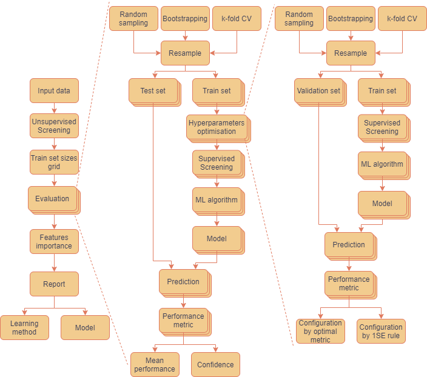

renoir is an R package providing an analytical framework for robust and reproducible machine learning analyses.
The idea behind renoir is to implement a scalable, modular and open-source software for the standardised application of machine learning techniques to high-dimensional data.

renoir allows for a robust estimation of the true error of a learning methodology by implementing a multiple random-sampling approach spanning different training-set sizes, and computing mean performance metrics with confidence intervals.
Appropriate unsupervised pre-processing strategies for initial dimensionality reduction are integrated to facilitate the correct application as part of the process.
For each considered train-set size, the evaluation of the learning methodology is based on the training and testing of the models over multiple independent train/test sets of data generated via random sampling, bootstrapping or k-fold cross-validation, the training set used to build the models, the left-out set to assess the performance. The computed measures of assessment are then used to obtain an estimate of the mean performance and the related 95% confidence interval.
Different supervised feature screening strategies are implemented and incorporated in the learning steps, i.e. before the training/tuning of the models.
Regression and classification problems for binomial data are currently supported.
Installation
- Install latest development version from GitHub (requires devtools package):
if (!require("devtools")) {
install.packages("devtools")
}
devtools::install_github(
repo = "alebarberis/renoir",
dependencies = TRUE,
build_vignettes = FALSE
)Getting started
If you are just getting started with renoir we recommend starting with Getting Started section of the site.